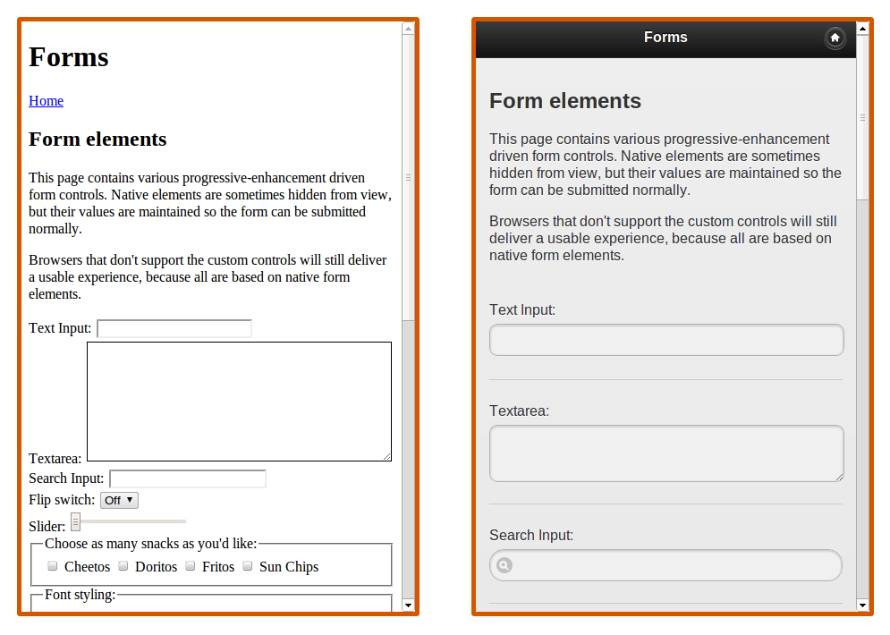
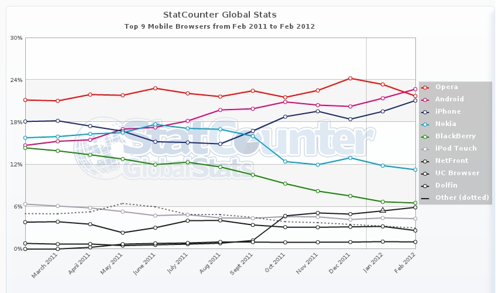

Progressive Enhancement
on the mobile web
johnbender.github.com/presentation-jqm-rails
| z, ? | toggle help (this) |
| space, → | next slide |
| shift-space, ← | previous slide |
| d | toggle debug mode |
| ## <ret> | go to slide # |
| c, t | table of contents (vi) |
| f | toggle footer |
| r | reload slides |
| n | toggle notes |
| p | run preshow |
johnbender.github.com/presentation-jqm-rails
vagrantup.com
no one uses this crap
jquerymobile.com/gbs/
6000+ watchers • 1100+ forks
8 books • 7 publishers
news.ycombinator.com/item?id=3549640

// no hash, no ajax example.com/foo/bar/baz // hash support example.com/#/foo/bar/baz // replaceState support example.com/foo/bar/baz
it solves all the things, amiright!?!
it solves all the things, amiright!?!
usage doubled to 8.5% from '11 to '12

(push|pop|replace)State
180°? 90°? 0°? 270°?
2 x each browser
delay • scrolling • both inputs

inflammatory statements at railsconf
80+% percent of androids
yes, even rendering
we use to fix bugs
toy examples work great
github.com/johnbender/jqm-rails
sign up • sign in • status
getcha' <head> right...?
<link rel="stylesheet" href="$CDN/jquery.mobile.css"/> <script src="$CDN/jquery-1.6.4.min.js"></script> <script src="$CDN/jquery.mobile.js"></script>
<meta name="viewport" content="width=device-width, initial-scale=1"> <%= stylesheet_link_tag "application" %> <%= javascript_include_tag "application" %> <script src="$CDN/jquery.mobile.css"></script> <script src="$CDN/jquery.mobile.js"></script>
<meta name="viewport" content="width=device-width, initial-scale=1"> <%= stylesheet_link_tag "application" %> <%= javascript_include_tag "application" %> <script src="$CDN/jquery.mobile.css"></script> <script src="$CDN/jquery.mobile.js"></script>
<meta name="viewport" content="width=device-width, initial-scale=1"> <%= stylesheet_link_tag "application" %> <%= javascript_include_tag "application" %> <script src="$CDN/jquery.mobile.css"></script> <script src="$CDN/jquery.mobile.js"></script>
<meta name="viewport" content="width=device-width, initial-scale=1"> <%= stylesheet_link_tag "application" %> <%= javascript_include_tag "application" %> <script src="$CDN/jquery.mobile.css"></script> <script src="$CDN/jquery.mobile.js"></script>
v2.0.1 ⟶ 1.7.1
page ∈ layout ⋁ page ∈ view
views rendered into jqm page
<body> <div data-role="page"> <div data-role="header"> <h1><%= yield :heading %></h1> </div> <div data-role="content"> <%= yield %> </div> </div> </body>
<body> <div data-role="page"> <div data-role="header"> <h1><%= yield :heading %></h1> </div> <div data-role="content"> <%= yield %> </div> </div> </body>
<body> <div data-role="page"> <div data-role="header"> <h1><%= yield :heading %></h1> </div> <div data-role="content"> <%= yield %> </div> </div> </body>
views render their own pages
<body> <%= yield %> </body>
<div data-role="page"> <div data-role="header"> <h1><%= h1 %></h1> </div> <div data-role="content"> <%= yield %> </div> </div>
<% render :layout => 'shared/page', :locals => { :h1 => "foo" } do %> <div>The Content</div> <% end %>
jquery-rails data attributes
$ grep data- jquery_ujs.js
//= require jquery //= require jquery_ujs //= require . $( document ).on( "mobileinit", function() { $.mobile.ns = "foo-"; });
//= require jquery //= require jquery_ujs //= require . $( document ).on( "mobileinit", function() { $.mobile.ns = "foo-"; });
//= require jquery //= require jquery_ujs //= require . $( document ).on( "mobileinit", function() { $.mobile.ns = "foo-"; });
<meta name="viewport" content="width=device-width, initial-scale=1"> <%= stylesheet_link_tag "application" %> <%= javascript_include_tag "application" %> <script src="$CDN/jquery.mobile.css"></script> <script src="$CDN/jquery.mobile.js"></script>
generally, reposting to the same url
existing loaded pages
<div data-role="page" data-url="/foos"> <div data-role="content"> All the Foos </div> </div> <div data-role="page" data-url="/bars"> <div data-role="content"> <a href="/foos">Go to Foos</a> All the Bars </div> </div>
<div data-role="page" data-url="/foos"> <div data-role="content"> All the Foos </div> </div> <div data-role="page" data-url="/bars"> <div data-role="content"> <a href="/foos">Go to Foos</a> All the Bars </div> </div>
<div data-role="page" data-url="/foos"> <div data-role="content"> All the Foos </div> </div> <div data-role="page" data-url="/bars"> <div data-role="content"> <a href="/bars">Go to Foos</a> All the Bars </div> </div>
def create @user = User.new(params[:user]) if @user.save redirect_to root_url else render :new end end
android users are back button fiends
def differentiate_path(path, *args) attempt = request.parameters["attempt"].to_i + 1 args.unshift(path).push(:attempt => attempt) send(*args) end
def differentiate_path(path, *args) attempt = request.parameters["attempt"].to_i + 1 args.unshift(path).push(:attempt => attempt) send(*args) end
def differentiate_path(path, *args) attempt = request.parameters["attempt"].to_i + 1 args.unshift(path).push(:attempt => attempt) send(*args) end
def differentiate_path(path, *args) attempt = request.parameters["attempt"].to_i + 1 args.unshift(path).push(:attempt => attempt) send(*args) end
# new form :url => differentiate_path(:users_path) # edit form :url => differentiate_path(:user_path, @user)
<body> <div data-role="page" data-dom-cache="true"> <div data-role="header"> <h1><%= yield :heading %></h1> </div> <div data-role="content"> <%= yield %> </div> </div> </body>
weinre • Adobe Shadow
<head> ... <% if Rails.env.development? %> <%= javascript_include_tag "debug/pagefailed" %> <% end %> ... </head>
function onLoadFailed( event, data ) { var text = data.xhr.responseText, newHtml = text.split( /<\/?html[^>]*>/gmi )[1]; $( "html" ).html( newHtml ); } $( document ).on( "pageloadfailed", onLoadFailed );
function onLoadFailed( event, data ) { var text = data.xhr.responseText, newHtml = text.split( /<\/?html[^>]*>/gmi )[1]; $( "html" ).html( newHtml ); } $( document ).on( "pageloadfailed", onLoadFailed );
//= require jquery
//= require jquery_ujs
//= require .
//= require jquery
//= require jquery_ujs
//= require_directory .
WURFL • media queries
AMD support • meta module